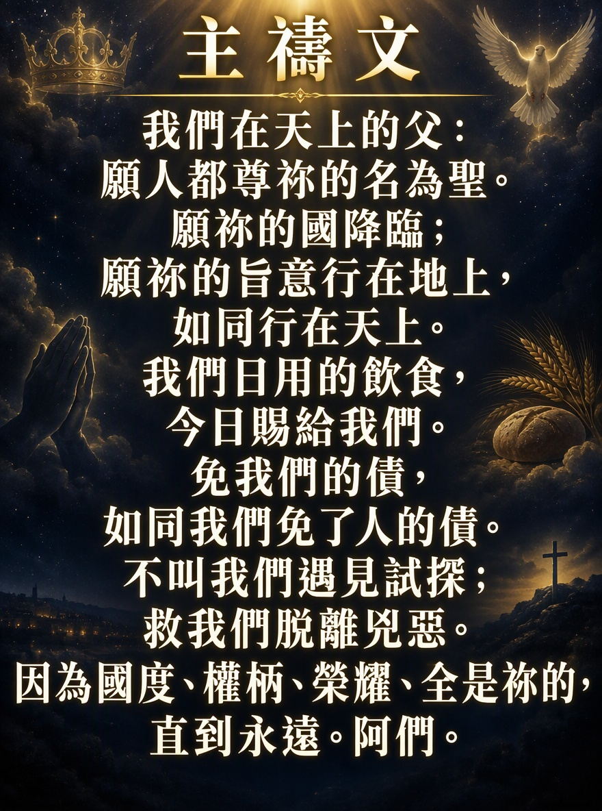
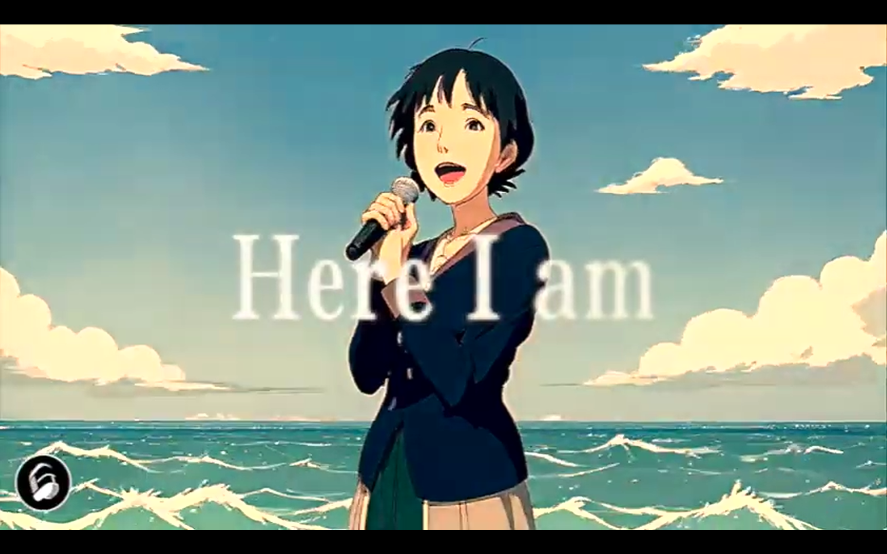
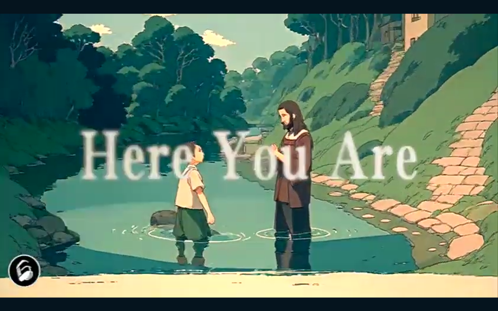
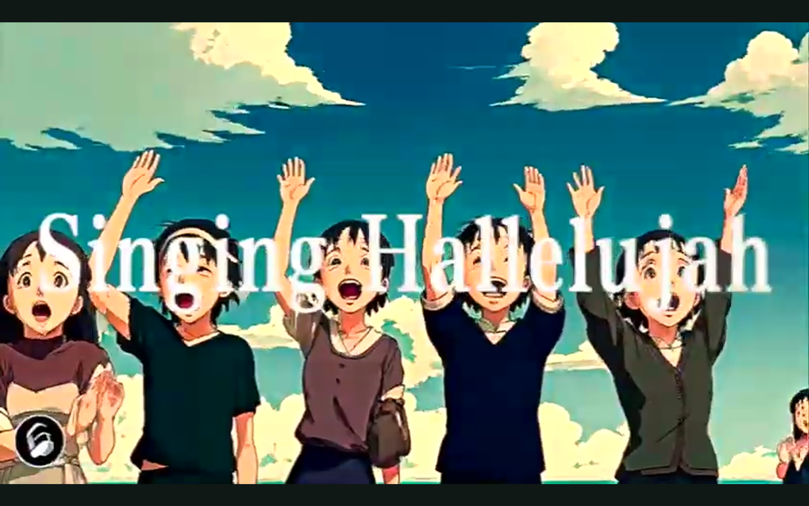

我們的神羅馬書 1:20 所說
我們的神 ... 如果你認識這首歌並且會唱，請跟著唱。諸天說述，神榮耀璀璨，造物奇妙，讓蒼生驚嘆，
伸手賜下，無窮盡恩惠，統管四方，權能越過天際。
神，我的主，榮耀寶座前，列國俯伏敬拜，至高的你，
神，我的主，誰又可媲美，頌讚，公義，聖潔，權柄，都歸於你。
你話語，創建一切，看萬有，無從推諉，
峻嶺吶喊，大海呼應，頌唱哈利路亞。
神，我的主，榮耀寶座前，列國俯伏敬拜，至高的你，
神，我的主，誰又可媲美，頌讚，公義，聖潔，權柄，都歸於你。
路加福音 19:40
抬頭看看是一片藍天
真的很美 但不時也有轉變
* 有起有跌 是祢給我的試鍊
* 挑戰靠著祢一定會走完
我雖走過死蔭的幽谷
卻不驚怕 有祢與我同在
祢的杆 祢的杖都安慰我
一生一世必有恩惠慈愛隨著我
這一生很美只因有祢
感謝祢賜下萬有生氣
望望四周花草散發出旋律都很美
我願將我所有奉上給祢
這一生很美只因有祢
感謝祢賜下萬有福氣
* 縱使變遷 也不掛牽
* 因我一生仰望祢的臉
抬頭看看是一片藍天
真的很美 但不時也有轉變
有起有跌 是祢給我的試鍊
挑戰靠著祢一定會走完
我雖走過死蔭的幽谷
卻不驚怕 有祢與我同在
祢的杆 祢的杖都安慰我
一生一世必有恩惠慈愛隨著我
這一生很美只因有祢
感謝祢賜下萬有生氣
望望四周花草散發出旋律都很美
我願將我所有奉上給祢
這一生很美只因有祢
感謝祢賜下萬有福氣
縱使變遷 也不掛牽
因我一生仰望祢的臉
這一生很美只因有祢
感謝祢賜下萬有生氣
望望四周花草散發出旋律都很美
我願將我所有奉上給祢
這一生很美只因有祢
感謝祢賜下萬有福氣
縱使變遷 也不掛牽
因我一生仰望祢的臉
縱使變遷 也不掛牽
因我一生仰望祢的臉
因我一生仰望祢的臉
歷經風浪人生中，更清楚你在保守，
在過去和永遠，仍是信靠你恩手，
度過歲月成長中，更加深切慕恩主，
是你慰藉憐憫我，主耶穌。
你說始終會伴我秋冬春與夏，
疼我，保守我，引導一生，
信靠恩主哪懼怕經多少變幻，
信靠主我神 永遠被懷抱。
* 你永不捨棄我，永遠與我一起，
* 深宵清早你亦陪我過，
過去今天如何，有你恩典加多，
這一切也靠著神跨過。
親愛主，牽我手 ... 到天庭, 我們終極的家親愛主，牽我手，建立我，領我走；
我疲倦，我軟弱，我苦愁；
經風暴，過黑夜，求領我進光明，
親愛主，牽我手，到天庭。
我道路，雖淒涼，主臨近，慰憂傷；
我在世快打完美好杖，
聽我求，聽我禱，攙我手，防跌倒；
親愛主，牽我手，常引導。
親愛主，牽我手，建立我，領我走；
我疲倦，我軟弱，我苦愁；
經風暴，過黑夜，求領我進光明，
親愛主，牽我手，到天庭。
願我的心讚頌我的主，願唱出讚美感恩的話語，
在你恩典中，幾多的好處，清早到晚上也未停住，
藏在你帳幕的隱密處，渴想一心盡力愛主。
* 也許一生多困苦，被世間撇棄恨惡，
* 但你總看顧，樂意攙扶，愁悶慨嘆變作歡呼，
人海中多昏暗迷糊，但我的心始終堅固，
投靠你，便覺恩典豐富。
* 也許心中感痛悲，甚至失去了力氣，
* 讓我抓緊你，熱暖的手臂，攜著我再振翅高飛，
人海中雖顛沛流離，但你應許不捨不棄，
投靠你，是最好的福氣，
全賴有著你，才令這生極美。
在我心中有千百萬心聲，來呈獻給我天上的主。
願讚美崇揚都一一歸給你，主你是偉大完美。
在我心中有數不盡感恩，來呈獻給我天上恩主。
願見證傳揚主恩典多麼美，感激你常顧念扶持。
齊真心呈獻讚美給你，盡我心意頌唱每篇的詩句；
* 齊舉手呈獻敬拜永遠歸給你，為你我獻上頌讚。
為你我獻作活祭。讓我永化作活祭。
到哪日 就是我們榮耀盼望的那日...
樂奏起天軍讚美
萬國都屈膝向地
...
過去的終於過去
祢抹乾所有眼淚
...
[Verse 1]
到那日我站於玻璃海
到那日晝夜唱聖哉
樂奏起天軍讚美
萬國都屈膝向地
我望見座前是我主一張臉
[Verse 2]
到那日我列身眾聖民
到那日我明了救恩
過去的終於過去
祢抹乾所有眼淚
一切更新了祢聖光今普照
[Chorus]
悠揚歌聲諸天都可聽
永永遠遠也為榮耀祢聖名
隨着天兵宣稱主得勝
四處敬拜這天籟聲永沒停
Here I am -- 我在這裡

Here you are -- 你在這裡

Singing Hallelujah -- 唱哈利路亞
